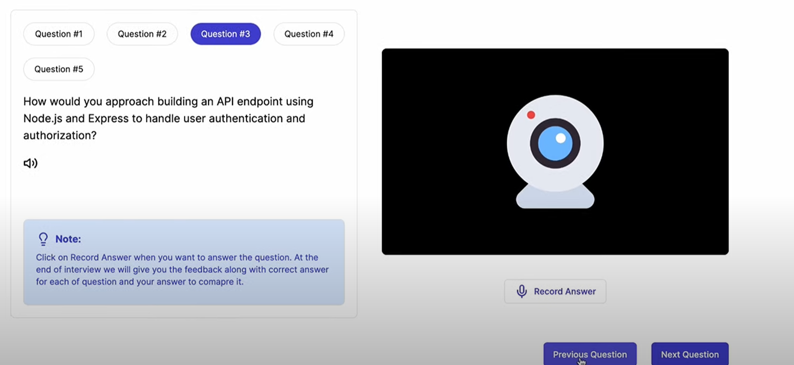

Language used: JavaScript, Tailwind
Developed a full-stack AI interview simulator that utilizes the Gemini AI API to generate tailored interview
questions based on job titles, reducing manual preparation time by 90%.
Integrated React Hook for speech-to-text, allowing spoken answers to be transcribed with 95% accuracy and stored
in PostgreSQL via React and Node.js.
Built a user-friendly front end with Next.js, TailwindCSS, and ShadCN components, improving UI consistency and
reducing development time by 20%.
Implemented a feedback and redo system for past interviews using PostgreSQL, boosting user confidence by 50%.


In this project, I developed an Android app called Crazy Matching. This was done in Android Studio
using Kotlin. Crazy Matching is a simple yet addictive matching game that consists of four
difficulty levels and a refresh button to provide seamless gameplay. The game unfortunately got taken down off the Google Play store.

Created a fun side scrolling game alongside 3 team members. The game is based on Simon Fraser University and you play as a Raccoon who
is trying to get from one side to another. This was my first major game that I developed, the premise of the game is to collect all of the donuts
in the maze and then escape before the enemies catch you.

Crafted an innovative machine learning web app in Python on Google Colab and Spyder for accurate predictions of Diabetes or Heart Disease likelihood from user data.
Leveraged Streamlit and Pickle for seamless app hosting and efficient model loading, ensuring an intuitive user experience.
Engineered a 77% accurate Logistic Regression model, boosting app dependability. Expertly trained an efficient Support Vector Machine model using numpy, pandas, and sklearn libraries.
To view the website, click here

A Pong variant made in Python, where the paddles are smaller and the ball increases speed each time it is hit.
Incorporates seamless local multiplayer and will keep players glued to their seats!

Developed a very basic rock paper scissors game in JavaScript. The purpose of this project was for me to get more familiar with JavaScript

A Java based Sliding Puzzle Solver that can solve boards that range from 3x3 all the way to 9x9, and can do this in under 30 seconds!
The sliding puzzle game is a classic tabletop or digital game where players rearrange tiles or pieces within a grid to achieve a specific pattern
or arrangement by sliding them one at a time into an empty space. The solver I created returns a text file containing the most optimal moves to solve the puzzle.

Created a custom linux shell from scratch, supports extra commands: print, log, theme and exit.
Implemented environmental variable assignment and offered two distinct modes: script and interactive.
Script mode takes in a file containing instructions and completes all the listed tasks.
Interactive mode allowed the user to take control and perform various tasks.
Built it on an Ubuntu virtual machine and extensively tested it using Valgrind.

Made a model to predict when forest fires will happen and the best time to rent a bike. Trained Linear Regression Models using scikit-learn, created both training and test sets
Successfully processed and trained machine learning models on diverse datasets, showcasing adaptability and curiosity in tackling complex real-world scenarios
Expanded project scope by incorporating additional datasets, demonstrating the ability to go beyond standard requirements, adapt to different data structures, and apply machine learning principles to diverse domains.

Worked with three other team members to design the interface a virtual fridge app.
Utilized Figma to create horizontal and vertical prototypes of various features, such as adding items to the fridge and searching for recipes.
Promoted inclusive design by allowing the creation and customization of various user accounts.
Fits in with modern trends such as solving issues for both the user and the world, for example our design promotes healthier lifestyles and environment friendly meals.

The website that you are on right now is one of my favorite projects! As I started working on more and more projects,
I wanted a place to show off what I made. So I made this website using CSS and HTML, and I am constantly working on and updating this website.
Whenever I complete a project, the first thing I do is add it to this website.

Created a fun air hockey variant where the puck increases in speed each time it is hit.
Utilized CSS to design and style the webpage, including layout structuring and color schemes.
Structured the webpage's elements and content using HTML to provide a foundation for the game's presentation.
Implemented the games logic and physics using JavaScript. If you want to play it press here